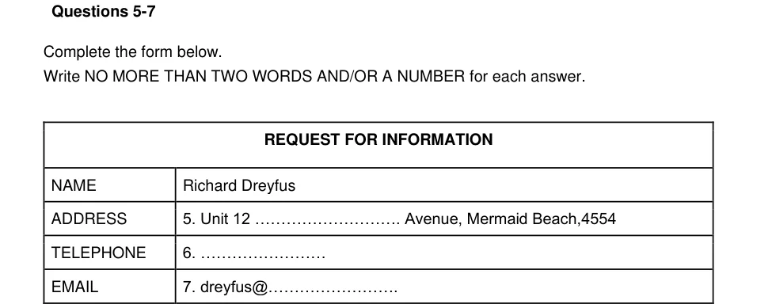
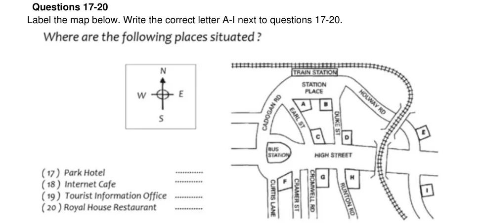
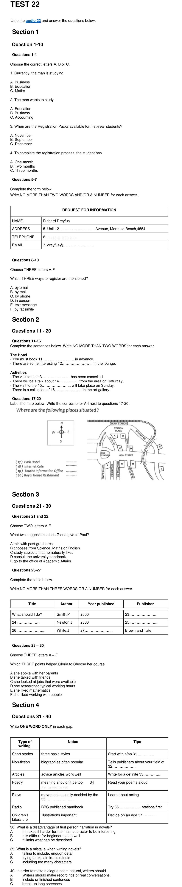

IELTS Listening: Test 22
Listening and questions
Section 1Questions 1–10
Questions 1–4
Choose the correct letters A, B or C.
1 Currently, the man is studying
2 The man wants to study
3 When are the Registration Packs available for first-year students?
4 To complete the registration process, the student has

Questions 8–10
Choose THREE letters A-F
Which THREE ways to register are mentioned?
Section 2Questions 11–20
Questions 11–16
Complete the sentences below. Write NO MORE THAN TWO WORDS for each answer.
The Hotel
You must book 11 in advance.
There are some interesting 12 in the lounge.
Activities
The visit to the 13 has been cancelled.
There will be a talk about 14 from the area on Saturday.
The visit to the 15 will take place on Sunday.
There is a collection of 16 in the art gallery.

Section 3Questions 21–30
Questions 21–22
Choose TWO letters A-E.
What two suggestions does Gloria give to Paul?
Questions 23–27
Complete the table below.
Write NO MORE THAN THREE WORDS OR A NUMBER for each answer.
| Title | Author | Year published | Publisher |
|---|
| What should I do? | Smith,P | 2000 | 23 |
| 24 | Newton,J | 2000 | 25 |
| 26 | White,J | 27 | Brown and Tate |
Questions 28–30
Choose THREE letters A – F
Which THREE points helped Gloria to Choose her course
Section 4Questions 31–40
Questions 31–40
Write ONE WORD ONLY in each gap.
| Type of writing | Notes | Tips |
|---|---|---|
| Short stories | three basic styles | Start with a/an 31 |
| Non-fiction | biographies often popular | Tells publishers about your field of 32 |
| Articles | advice articles work well | Write for a definite 33 |
| Poetry | meaning shouldn’t be too 34 | Read your poems aloud |
| Plays | movements usually decided by the 35 | Learn about acting |
| Radio | BBC published handbook | Try 36 stations first |
| Children’s Literature | Illustrations important | Decide on an age 37 |
38 What is a disadvantage of first person narration in novels?
39 What is a mistake when writing novels?
40 In order to make dialogue seem natural, writers should
Show the original book pages (picture)

Tap or click the pages to open them full size in a new tab.
Check your answers
Marking ignores capital letters and accepts plurals and the usual alternative answers. If your answer is right but not accepted, press My answer is also right under it.
Tapescript
Check your answers first, then the tapescript opens here.